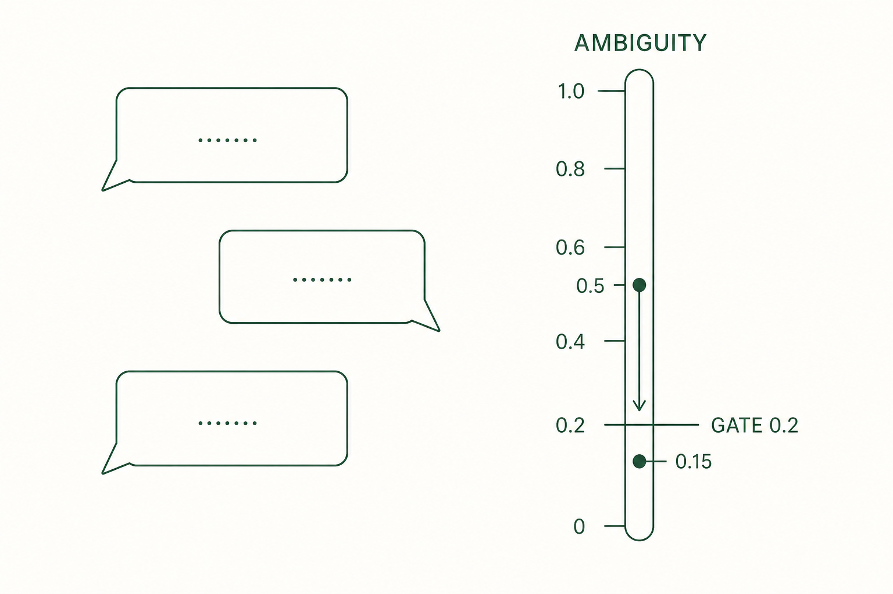

5. Interview
The Interview finds the decisions your idea has not made yet and asks about them. From here, one to-do app example continues through chapter 9.
5.1 What it does
"A to-do app" alone does not decide storage or how completion is handled. The Interview finds decisions like these that change the outcome, asks about them, and collects the answers as the raw material for the next chapter's Seed. A single sentence of input is enough.
5.2 Start
Run this inside the Claude Code session.
ooo interview "a simple web app to add today's to-dos and mark them done"Expected result: the first question appears. The number and order of questions depend on the idea.
If you want to try the question flow before real work, run ooo tutorial first.
5.3 How to answer
Each question pins one decision. For the example, these decisions get confirmed:
| Question topic | Example answer | Decision pinned |
|---|---|---|
| Data persistence | "It should survive a refresh" | Storage method |
| Completion handling | "Don't delete it, strike it through" | How done state is shown |
| User scope | "Just one person" | Accounts and sync excluded |
Answer in plain sentences. If you do not know, say so and take a suggestion; that is better than a vague answer.
5.4 Ambiguity Score

The Ambiguity Score expresses the remaining ambiguity in the requirements as a value from 0 to 1. The clarity of the goal (weighted 40%), constraints (30%), and success criteria (30%) is averaged, and the score is 1 minus that average. Closer to 0 means clearer.
5.5 Exit condition
When the score drops to 0.2 or below, the Interview is considered sufficient and Seed generation can proceed. A low score can still hide wrong content, so review the summary along with the number before generating a Seed.
5.6 session_id
When the Interview ends, a session_id remains in the output. Copy it; the next chapter uses it as the input for Seed generation.
5.7 One command from questions to execution — auto
To hand questions, Seed generation, and execution to a single command, use ooo auto.
ooo auto "a simple web app to add today's to-dos and mark them done"Expected result: question rounds run automatically, and execution starts only after the Seed passes grade A. If it stops midway, an auto_session_id and a resume command are shown. Grade A is explained in chapter 6.
To stop after the Seed and check it yourself, add --skip-run. Resume an interrupted session with ooo auto --resume <auto_session_id>.
For your first time we recommend the ooo interview path, where you answer each question yourself and can see what gets decided.